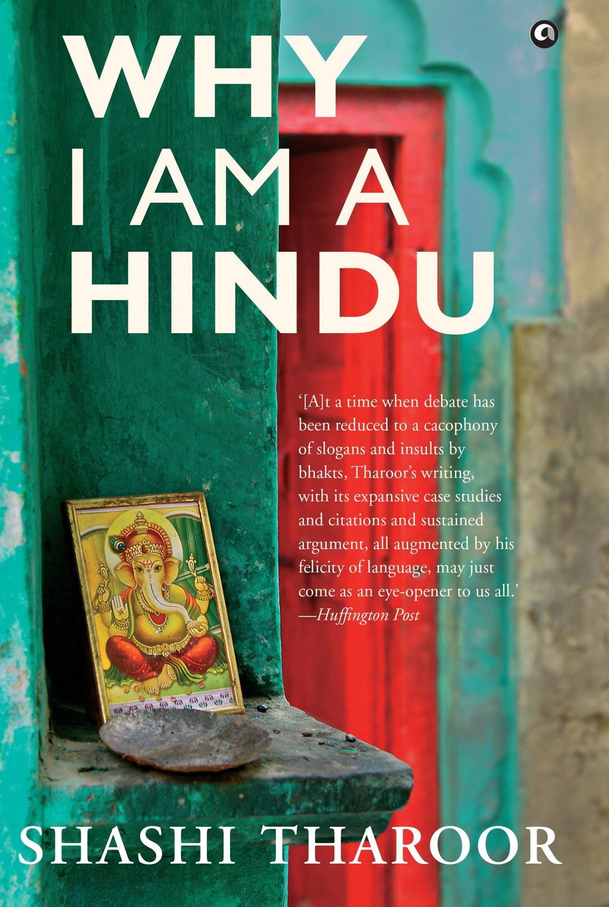

Purpose 1
Create a platform for deeper connection with the Divine.
Religious & Spiritual Book Reading Sessions
A calm, modern space for working professionals to engage deeply with spiritual and philosophical literature.
Scroll to explore
Why These Sessions
Create a platform for deeper connection with the Divine.
Broaden understanding of Hinduism and other world religions.
Replace passive entertainment with meaningful conversations.
Develop intellectual and spiritual depth with intention.
Session Flow
A gentle start with tea, calm surroundings, and a moment to arrive.
A clear and reflective overview of the chapter or section being explored.
Thoughtful conversation that invites reflection, curiosity, and shared insight.
Time for fellowship, questions, and a grounded sense of community.
Current Book
An elegant starting point for conversations around identity, faith, history, and the modern spiritual imagination.

Books We Will Explore
Shashi Tharoor
Karen Armstrong
Richard Dawkins
Why English Books
English allows us to bring together modern professionals from varied backgrounds in a shared intellectual language.
Yes, summaries and reflections will be offered in a way that remains welcoming and accessible.
Absolutely. A trial session is a good way to experience the tone, depth, and atmosphere of the circle.
Participants are encouraged to read along, though a book is not mandatory for attending the sessions.
Yes, the series will gradually include a thoughtful exploration of spiritual classics and modern renderings.
We will engage both modern books and foundational scriptures, balancing accessible language with deeper tradition.
Membership
Under Guidance
Guiding the circle with clarity, calm, and spiritual perspective.
Offering wisdom that balances tradition with lived experience.
Leading with warmth, scholarship, and thoughtful facilitation.
Register
Share your interest and we’ll reach out with the upcoming reading calendar, venue details, and registration guidance.
Open Google Form